Business Forecasting
We only have samples, and yet we want to learn something about the population.
A population we can see: 100 points where we know the true line.
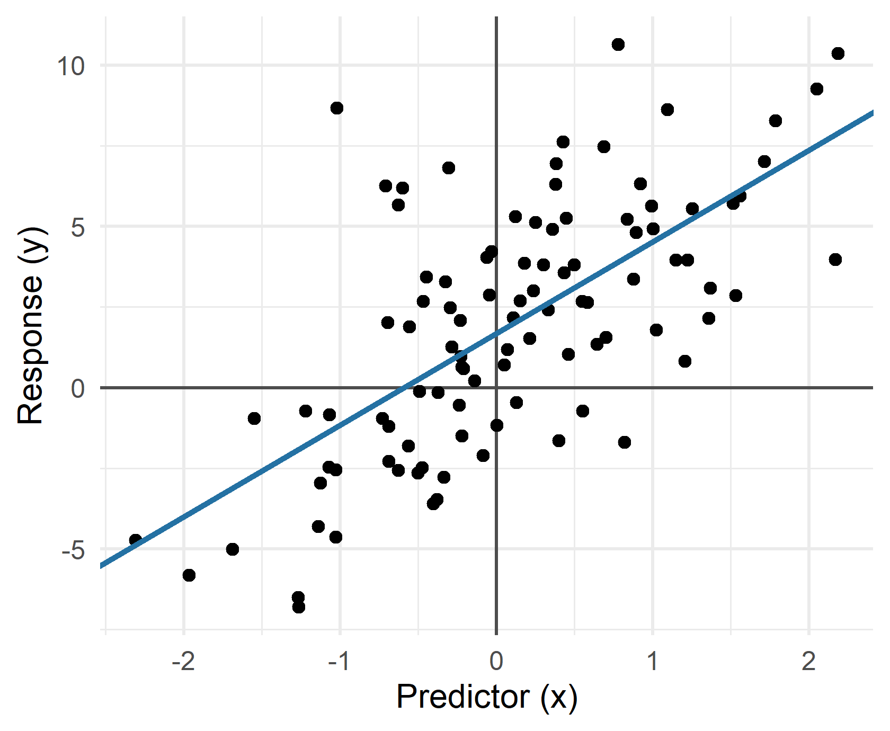
Population regression
\[y_i = 1.69 + 2.84\,x_i + u_i\]
A random sample of 40 from the same population.
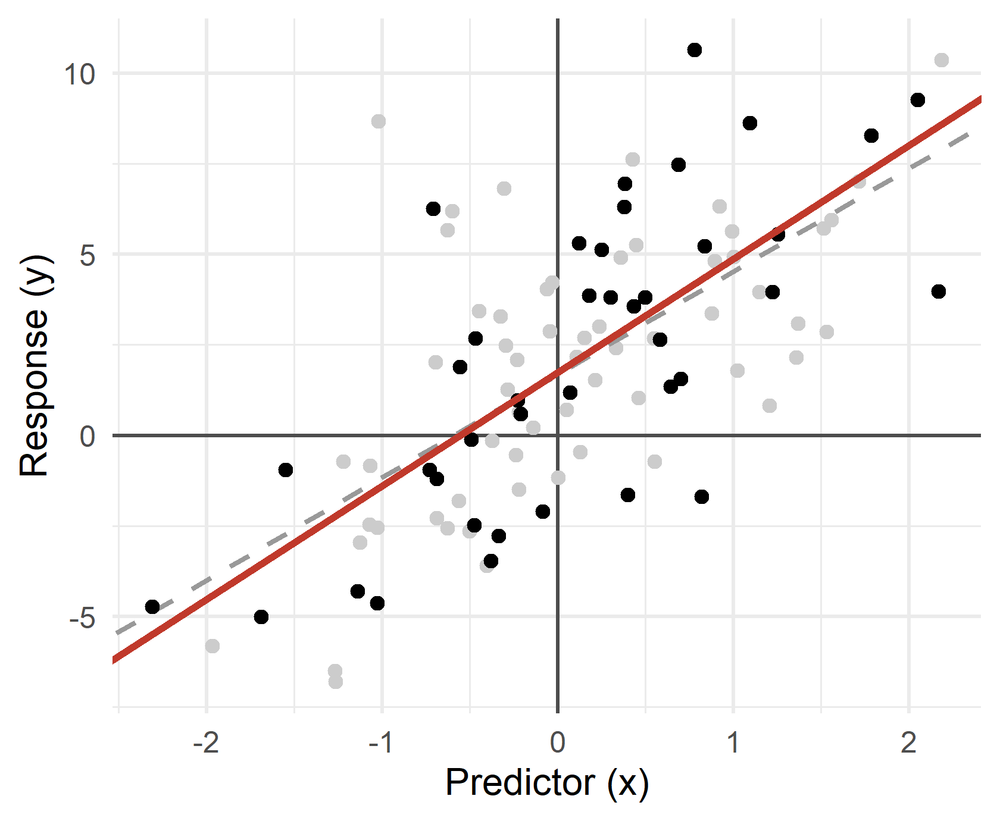
Population regression
\[y_i = 1.69 + 2.84\,x_i + u_i\]
Sample 1 estimate
\[\hat{y}_i = 1.75 + 3.13\,x_i\]
A random sample of 40 from the same population.
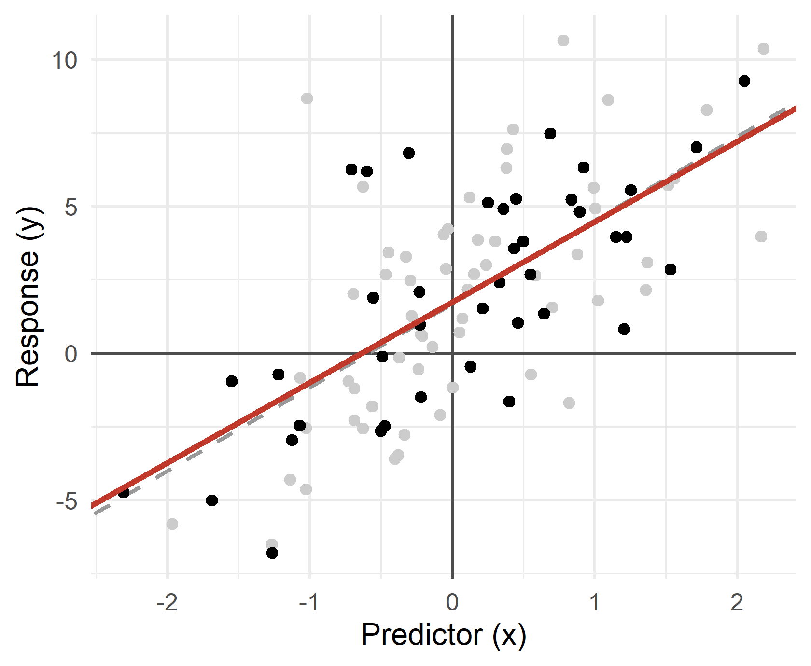
Population regression
\[y_i = 1.69 + 2.84\,x_i + u_i\]
Sample 2 estimate
\[\hat{y}_i = 1.76 + 2.73\,x_i\]
A random sample of 40 from the same population.
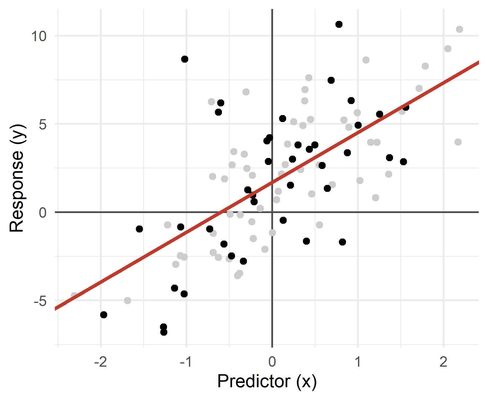
Population regression
\[y_i = 1.69 + 2.84\,x_i + u_i\]
Sample 3 estimate
\[\hat{y}_i = 1.70 + 2.82\,x_i\]
A random sample of 40 from the same population.
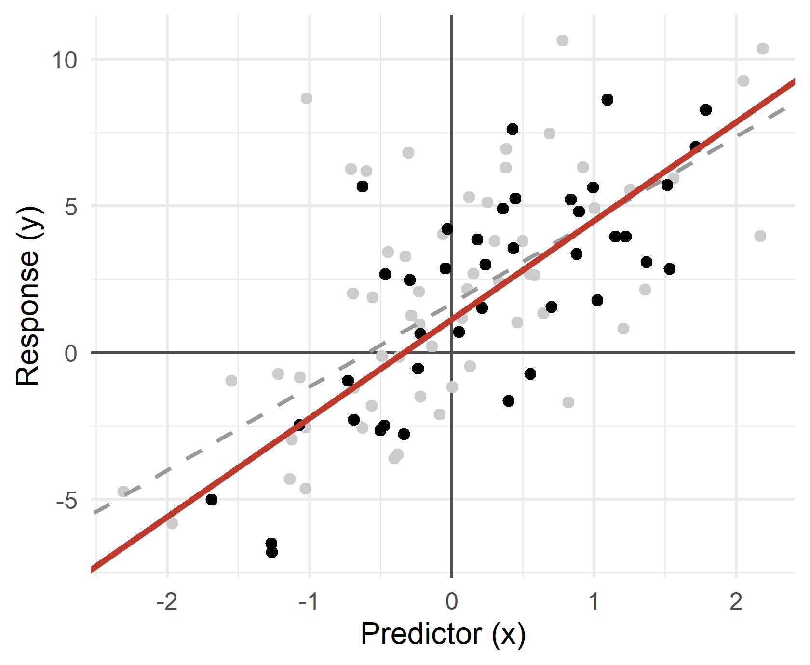
Population regression
\[y_i = 1.69 + 2.84\,x_i + u_i\]
Sample 4 estimate
\[\hat{y}_i = 1.15 + 3.36\,x_i\]
A random sample of 40 from the same population.
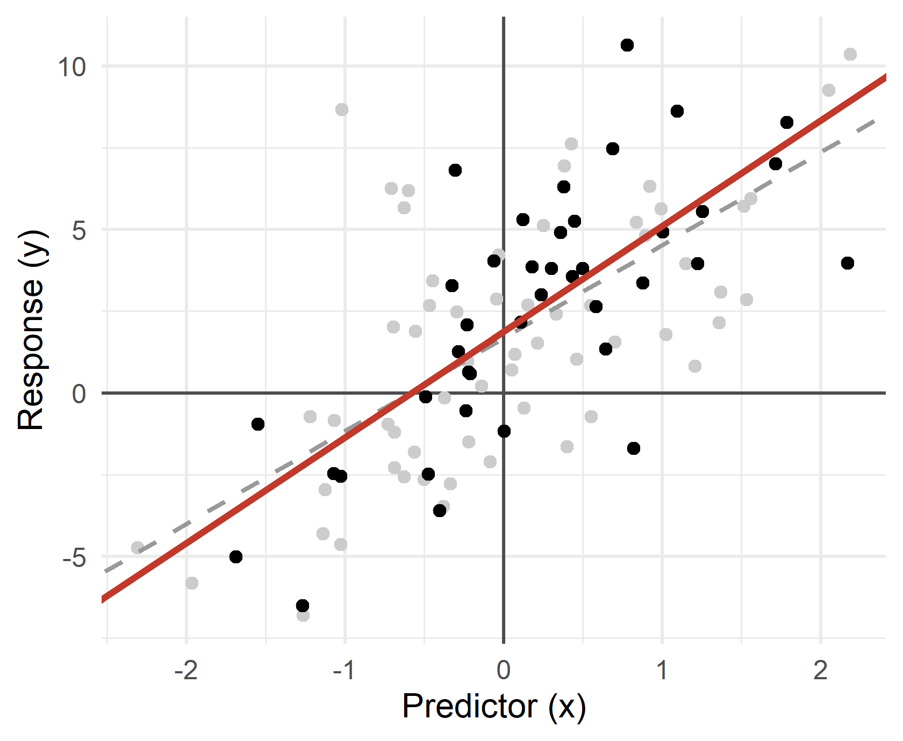
Population regression
\[y_i = 1.69 + 2.84\,x_i + u_i\]
Sample 5 estimate
\[\hat{y}_i = 1.89 + 3.23\,x_i\]
Now imagine drawing not five but 1,000 samples of 40 from a population whose true slope is 3, and fitting a line to each one.
Each click draws a fresh sample from a population whose true slope is 3. Left: the sample and its line. Right: every slope drawn so far. Press Draw 100 ten times, then show the numbers. Then: what makes the slope steadier →
One sample gives one slope. Which slope you get depends on which points you happened to draw.
The sampler’s histogram is the sampling distribution of \(\hat{\beta}_1\). Its centre and its spread are the next two sections.
Centre first, then spread. The spread has a name: the standard error.
Under the four assumptions from last week:
OLS is unbiased:
\[\cssId{mt-Eb1}{E(\hat{\beta}_1)} = E\left(\frac{\sum (x_i - \bar{x})(y_i - \bar{y})}{\sum (x_i - \bar{x})^2}\right) = \beta_1 \qquad \text{and} \qquad \cssId{mt-Eb0}{E(\hat{\beta}_0)} = \beta_0\]
Assumption 2 alone is enough for unbiasedness. Assumptions 3 and 4 matter for the spread.
A firm regresses employees’ salary on their years of education, to learn what one more year of schooling is worth.
Ability, motivation, family connections and the quality of the school all move salary and all sit in \(u_i\).
People with more of them also tend to study longer. Then \(u_i\) is higher, on average, for people with more education: \(E(u_i)\) is not zero at every level of \(x\).
The slope is then biased upward. It mixes the effect of schooling with the effect of everything that comes with schooling.
On the sampler, a typical slope missed the true slope by about 0.5. Which of these would make that number smaller?
Go back to the sampler and move one slider at a time.
All three levers sit in one formula:
\[\text{Var}(\hat{\beta}_1) = \frac{\cssId{mt-sig2}{\sigma^2}}{\cssId{mt-sxx}{\sum (x_i - \bar{x})^2}} = \frac{\sigma^2}{S_{xx}}\]
And for the intercept:
\[\text{Var}(\hat{\beta}_0) = \sigma^2 \left( \cssId{mt-vb0n}{\frac{1}{n}} + \cssId{mt-vb0x}{\frac{\bar{x}^2}{S_{xx}}} \right)\]
The standard error is the standard deviation of the estimator: \(SE(\hat{\beta}_1) = \sqrt{\text{Var}(\hat{\beta}_1)}\). See the algebra.
We never see the errors \(u_i\), so we do not know \(\sigma^2\). We estimate it from the residuals:
\[\hat{\sigma}^2 = s^2 = \frac{\cssId{mt-s2num}{\sum \hat{u}_i^2}}{\cssId{mt-s2den}{n-2}}\]
Dividing by \(n-2\) makes it unbiased: \(E(s^2) = \sigma^2\).
Put it into the variance and take the square root:
\[SE(\hat{\beta}_1) = \frac{\cssId{mt-sehat}{s}}{\sqrt{S_{xx}}}\]
For the regression of bikes$trips on bikes$temp (\(n = 781\)), build the standard errors from the formula sheet.
anova(reg). Compute \(s^2\) and \(s\).bikes$temp.vcov(reg).anova(reg)[2, 2] is \(SSE\). The sheet has no sum(), but \(S_{xx} = (n-1) \times\) var(bikes$temp). There is no sqrt() either: use ^0.5. vcov(reg)[2, 2] is the variance of the slope and vcov(reg)[1, 1] the variance of the intercept.
\(s = 5{,}301.6\) trips and \(S_{xx} = 4{,}044\). So \(SE(\hat{\beta}_1) = 83.37\) and \(SE(\hat{\beta}_0) = 1{,}427.3\). vcov() gives exactly the same two numbers.
The slope is 723.6 trips per degree, and a typical sample would miss the true slope by about 83 trips per degree.
Fit the same regression on one year at a time and the slopes are 549, 804 and 857. Each year has about a third of the days, so each yearly slope has a standard error about \(\sqrt{3} \approx 1.7\) times larger: 120 to 150 trips per degree. A spread of a few hundred between years is what that predicts. See the three years.
OLS is unbiased. Is there an unbiased estimator that moves less?
Linear in the parameters, with an additive error: \(y_i = \beta_0 + \beta_1 x_i + u_i\).
The error has mean zero: \(E(u_i) = 0\). On average the line is not too high or too low.
Constant variance: \(\text{Var}(u_i) = \sigma^2\). The scatter around the line is the same width everywhere (homoskedasticity).
Errors are uncorrelated across observations: one day’s error tells you nothing about the next day’s.
Assumptions 1 and 2 give unbiasedness. Adding 3 and 4 gives the next result.
Under assumptions 1–4, among all linear and unbiased estimators, OLS has the smallest variance:
\[\text{Var}(\hat{\beta}_1) \leq \text{Var}(\cssId{mt-btilde}{\tilde{\beta}_1}) \qquad \text{and} \qquad \text{Var}(\hat{\beta}_0) \leq \text{Var}(\tilde{\beta}_0)\]
where \(\tilde{\beta}_1\) and \(\tilde{\beta}_0\) are any other linear and unbiased estimators.
OLS is BLUE: the Best Linear Unbiased Estimator.
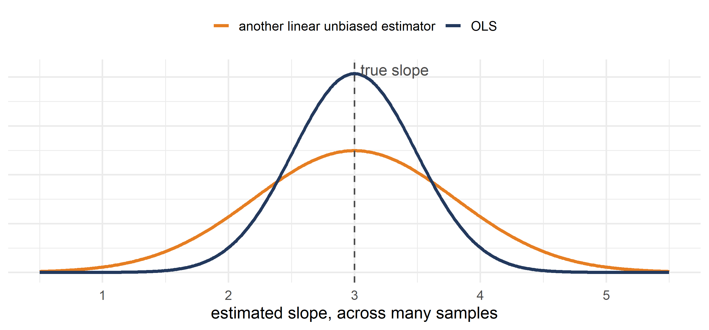
A simple idea: split the sample at the median of \(x\), into low-\(x\) and high-\(x\) points, and draw the line through the two group means.
\[\tilde{\beta}_1 = \frac{\cssId{mt-yhi}{\bar{y}_{high}} - \bar{y}_{low}}{\cssId{mt-xhi}{\bar{x}_{high}} - \bar{x}_{low}}\]
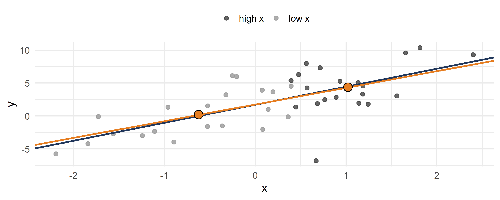
Both estimators are unbiased. Draw 5,000 samples of 40 from the sampler’s population (true slope 3) and compute both slopes in every sample. Which histogram is wider?
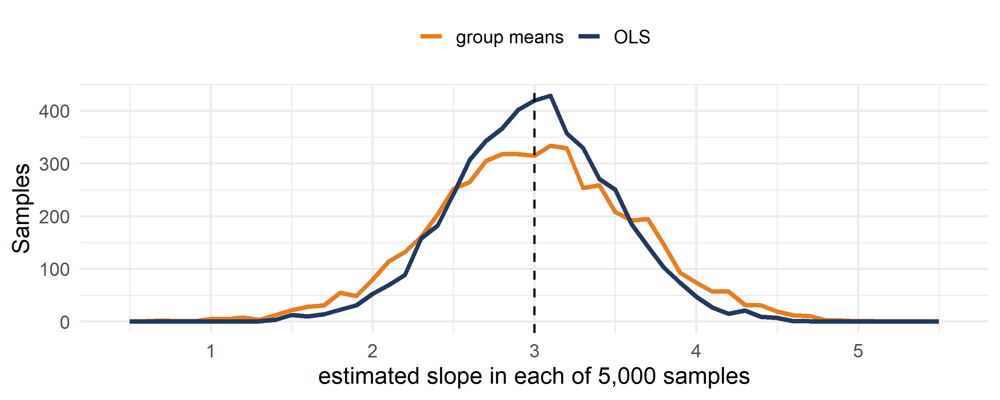
Both average 3: OLS 2.99, group means 2.99. But the standard deviation is 0.49 for OLS and 0.62 for the group line, about 26% more. The group line throws away how far each point sits from the centre; OLS uses it.
A linear estimator is a weighted sum of the \(y_i\):
\[\tilde{\beta}_1 = \sum_i \cssId{mt-ci}{c_i}\, y_i\]
OLS is one of them. Since \(\sum (x_i - \bar{x})\bar{y} = 0\):
\[\hat{\beta}_1 = \frac{\sum (x_i - \bar{x})(y_i - \bar{y})}{\sum (x_i - \bar{x})^2} = \frac{\sum (x_i - \bar{x})\, y_i}{\sum (x_i - \bar{x})^2} \qquad \text{so} \qquad \cssId{mt-cols}{c_i^{OLS} = \frac{x_i - \bar{x}}{S_{xx}}}\]
Points far from \(\bar{x}\) get the biggest weights. That is the plank from the slider slide again.
We have not assumed anything about the distribution of the data or of \(\hat{\beta}\).
For inference — confidence intervals and tests — we need the distribution of \(\hat{\beta}\).
We add one assumption: the errors are normal, \(u_i \sim N(0, \sigma^2)\).
A linear combination of normal variables is normal. \(\hat{\beta}_1\) is a weighted sum of the \(y_i\), so:
\[\hat{\beta}_1 \sim \cssId{mt-nb1}{N\left( \beta_1,\ \frac{\sigma^2}{\sum (x_i - \bar{x})^2} \right)} \qquad \hat{\beta}_0 \sim N\left( \beta_0,\ \sigma^2 \left( \frac{1}{n} + \frac{\bar{x}^2}{\sum (x_i - \bar{x})^2} \right) \right)\]
And the variance estimate has its own distribution:
\[\frac{(n-2)\, s^2}{\sigma^2} \sim \cssId{mt-chi}{\chi^2_{n-2}}\]
These are the lines on your formula sheet under Simple Linear Regression.
With many observations we can drop the normality assumption. By the Central Limit Theorem, approximately:
\[\hat{\beta}_1 \;\cssId{mt-dconv}{\overset{d}{\longrightarrow}}\; N\left( \beta_1,\ \frac{\sigma^2}{S_{xx}} \right) \qquad \hat{\beta}_0 \;\overset{d}{\longrightarrow}\; N\left( \beta_0,\ \sigma^2 \left( \frac{1}{n} + \frac{\bar{x}^2}{S_{xx}} \right) \right)\]
Your histogram of 1,000 slopes was this bell. Why a sum of errors turns normal.
Is the effect real, or could it be zero? Is it the number someone promised?
A retailer wants to know if advertising raises sales:
\[\text{Sales}_i = \beta_0 + \beta_1 \cdot \text{AdSpend}_i + u_i\]
Does more advertising actually raise sales? If not, the budget goes elsewhere.
\[H_0: \beta_1 = 0 \ \text{(ads have no effect)} \qquad \text{against} \qquad H_A: \beta_1 > 0 \ \text{(ads raise sales)}\]
A logistics firm models delivery time on distance to the warehouse:
\[\text{ShipDays}_i = \beta_0 + \beta_1 \cdot \text{Distance}_i + u_i\]
where distance is in hundreds of miles and ShipDays is the average days to delivery.
Its delivery promises assume each extra 100 miles adds exactly one day. Is that right?
\[H_0: \beta_1 = 1 \qquad \text{against} \qquad H_A: \beta_1 \neq 1\]
If distance matters more, promises are broken. If it matters less, the firm quotes delivery times that are too slow and loses customers.
A video app tests a new recommendation system:
\[\text{HoursWatched}_i = \beta_0 + \beta_1 \cdot \text{NewAlgorithm}_i + u_i\]
where NewAlgorithm is 1 if the user saw the new system, 0 otherwise.
Question 1. Is average weekly viewing without the new system 10 hours, as the ad sales team tells advertisers?
\[H_0: \beta_0 = 10 \qquad \text{against} \qquad H_A: \beta_0 \neq 10\]
Question 2. Does mean viewing differ between users with and without the new system? This is a test for a difference in means, done by regression.
\[H_0: \beta_1 = 0 \qquad \text{against} \qquad H_A: \beta_1 \neq 0\]
To test \(H_0: \beta_1 = \beta_1^{0}\) against \(H_A: \beta_1 \neq \beta_1^{0}\), where \(\beta_1^{0}\) is the value under the null:
\[T = \frac{\cssId{mt-tnum}{\hat{\beta}_1 - \beta_1^{0}}}{\cssId{mt-tden}{SE(\hat{\beta}_1)}} = \frac{\hat{\beta}_1 - \beta_1^{0}}{s / \sqrt{S_{xx}}} \sim \cssId{mt-tdist}{t_{n-2}}\]
For the intercept, \(H_0: \beta_0 = \beta_0^{0}\) against \(H_A: \beta_0 \neq \beta_0^{0}\):
\[T = \frac{\hat{\beta}_0 - \beta_0^{0}}{SE(\hat{\beta}_0)} = \frac{\hat{\beta}_0 - \beta_0^{0}}{\cssId{mt-seb0}{s \sqrt{\frac{1}{n} + \frac{\bar{x}^2}{S_{xx}}}}} \sim t_{n-2}\]
From here it is the testing procedure from W06: a critical value from qt(), or a p-value from pt().
The p-value is the probability of a test statistic at least as extreme as ours, if the null hypothesis were true. Regression tests are usually two-sided:
\[p\text{-value} = 2 \cdot P\left( \cssId{mt-pt}{t_{n-2} > |T|} \right)\]
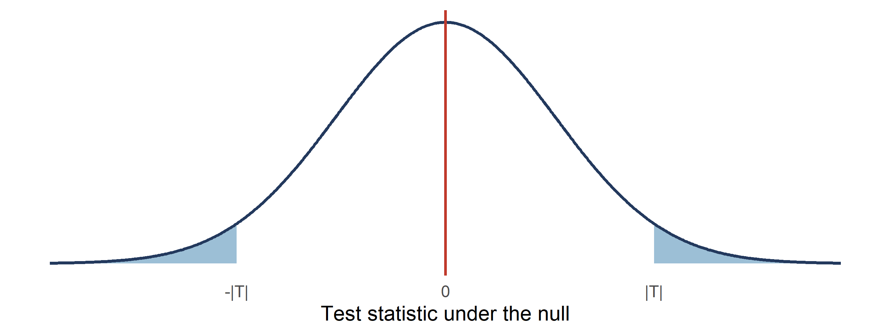
The shaded area is the p-value. A small p-value says: if the null were true, a result like ours would be rare.
Back to the finance director’s second question. Could the true effect of temperature on trips be zero?
\[H_0: \beta_1 = 0 \qquad \text{against} \qquad H_A: \beta_1 \neq 0\]
If we cannot reject \(H_0\), the client has no evidence that warmer days bring more trips, and no reason to size the fleet by temperature at all.
Test \(H_0: \beta_1 = 0\) against \(H_A: \beta_1 \neq 0\) at the 5% level, for the regression of bikes$trips on bikes$temp (\(n = 781\)).
Slope: cov(bikes$temp, bikes$trips) / var(bikes$temp). Standard error: vcov(reg)[2, 2]^0.5. Critical value: qt(0.975, df = n - 2). For a positive \(T\), the two-sided p-value is 2 * (1 - pt(t_stat, df = n - 2)).
Temperature does predict trips. The slope is real.
Run summary() on the model. Find the three numbers you just built: the standard error, the \(t\) statistic and the p-value.
summary(reg). Look at the temp row.
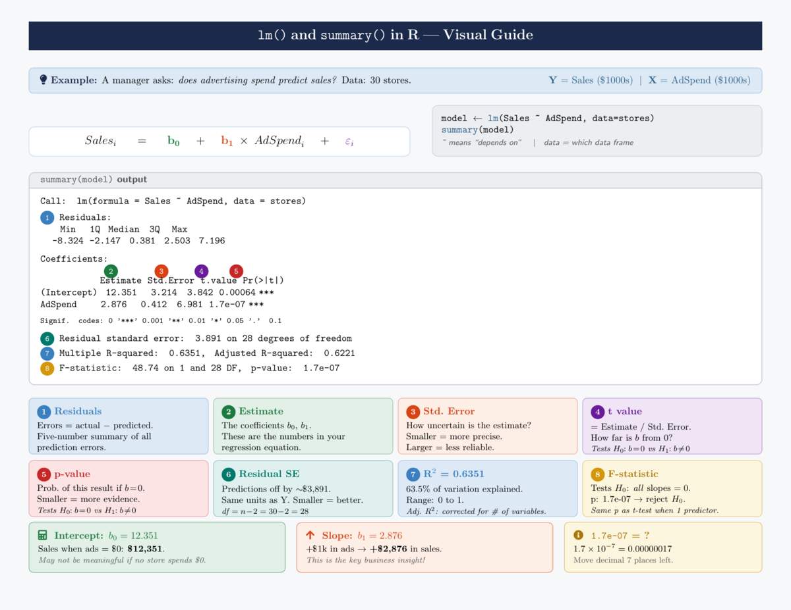
The t value column always tests \(H_0: \beta = 0\) against \(H_A: \beta \neq 0\). For any other null value you build \(T\) yourself.
On days with bad air, Mexico City can declare an environmental contingency. If pollution cuts ridership, Ecobici can send fewer rebalancing trucks out on those days.
The slope of trips on pm25 answers it: how many trips are lost per extra µg/m³ of fine particles?
Regress bikes$trips on bikes$pm25 (\(n = 781\)).
summary().The same steps as Exercise 2. The slope is negative, so \(T\) is negative: the two-sided p-value is 2 * pt(t_stat, df = n - 2).
Two new cases for the next exercise.
vcov(reg)[1, 1]^0.5 gives it too.| Alternative | Reject when | p-value in R |
|---|---|---|
| \(H_A: \beta \neq \beta^{0}\) | \(\lvert T \rvert > t_{n-2,\,1-\alpha/2}\) | 2 * (1 - pt(t_stat, df)) if \(T > 0\), 2 * pt(t_stat, df) if \(T < 0\) |
| \(H_A: \beta > \beta^{0}\) | \(T > t_{n-2,\,1-\alpha}\) | 1 - pt(t_stat, df) |
| \(H_A: \beta < \beta^{0}\) | \(T < -t_{n-2,\,1-\alpha}\) | pt(t_stat, df) |
Last week: Fridays have about 1,200 fewer trips than Monday–Thursday. Now regress bikes$trips on bikes$friday (\(n = 781\)) and test two claims.
Slope: cov(bikes$friday, bikes$trips) / var(bikes$friday). Intercept: mean(bikes$trips) - b1 * mean(bikes$friday). The standard error of the intercept is vcov(reg_fri)[1, 1]^0.5. For \(H_A: \beta_0 < 30{,}000\) the p-value is the left tail only: pt(t_stat, df = n - 2).
n <- 781
reg_fri <- lm(trips ~ friday, data = bikes)
b1 <- cov(bikes$friday, bikes$trips) / var(bikes$friday)
b0 <- mean(bikes$trips) - b1 * mean(bikes$friday)
b1
b0
se_b1 <- vcov(reg_fri)[2, 2]^0.5
T1 <- b1 / se_b1
T1
2 * pt(T1, df = n - 2)
se_b0 <- vcov(reg_fri)[1, 1]^0.5
T0 <- (b0 - 30000) / se_b0
T0
pt(T0, df = n - 2)
qt(0.05, df = n - 2)
summary(reg_fri)summary() cannot answer this one: its t value for the intercept tests \(\beta_0 = 0\).The bike maker’s planning guide says each extra degree brings 1,000 more trips. The guide was built on data from another city. Your client will order bikes by this guide unless the Mexico City data disagree.
\[H_0: \beta_1 = 1{,}000 \qquad \text{against} \qquad H_A: \beta_1 \neq 1{,}000\]
Two-sided, because both mistakes cost money. If the true effect is smaller, she buys bikes that stand unused. If it is larger, stations run empty on hot days.
Test \(H_0: \beta_1 = 1{,}000\) against \(H_A: \beta_1 \neq 1{,}000\) at 5%, for bikes$trips on bikes$temp (\(n = 781\)). Should she order by the guide?
Only the numerator changes: \(\hat{\beta}_1 - 1{,}000\). \(T\) is negative here, so the two-sided p-value is 2 * pt(t_stat, df = n - 2).
\(T = (723.55 - 1{,}000) / 83.37 = -3.32\). The critical values are \(\pm 1.963\), and \(-3.32 < -1.963\): reject \(H_0\). The p-value is 0.00096.
Mexico City gets fewer extra trips per degree than the guide says. Ordering by the guide would over-size the fleet.
Back to the landlord from last week. Adding 10 m² to an apartment costs 150,000 pesos. A real-estate agent tells her that each m² adds 200 pesos a month in rent, so the work pays back in 75 months.
rents has 150 apartments: rents$size (m²) and rents$rent (pesos a month).
The same steps as Exercise 6, with rents$size and rents$rent, and \(n - 2 = 148\) degrees of freedom.
The tech company from last week wants to put a line in its job ads: “Here, each year of experience is worth more than 2,500 pesos a month.” Legal will approve it only if the data support it.
hires has 120 engineers: hires$experience (years) and hires$salary (pesos a month).
One-sided with \(H_A: \beta_1 > 2{,}500\): the p-value is 1 - pt(t_stat, df = n - 2) and the critical value is qt(0.95, df = n - 2). Two-sided: 2 * (1 - pt(t_stat, df = n - 2)) and qt(0.975, df = n - 2).
n <- 120
reg_sal <- lm(salary ~ experience, data = hires)
b1 <- cov(hires$experience, hires$salary) / var(hires$experience)
b1
se_b1 <- vcov(reg_sal)[2, 2]^0.5
se_b1
t_stat <- (b1 - 2500) / se_b1
t_stat
qt(0.95, df = n - 2)
1 - pt(t_stat, df = n - 2)
qt(0.975, df = n - 2)
2 * (1 - pt(t_stat, df = n - 2))A test says yes or no. An interval says how big.
\(T\) has a \(t_{n-2}\) distribution, so
\[P\left( -t_{n-2,\,1-\alpha/2} < \cssId{mt-pivot}{\frac{\hat{\beta}_1 - \beta_1}{SE(\hat{\beta}_1)}} < t_{n-2,\,1-\alpha/2} \right) = \cssId{mt-conf}{1 - \alpha}\]
Rearranged for \(\beta_1\):
\[CI_{\beta_1} = \cssId{mt-cib}{\hat{\beta}_1} \pm \cssId{mt-ciq}{t_{n-2,\,1-\alpha/2}} \cdot \cssId{mt-cise}{\frac{s}{\sqrt{S_{xx}}}}\]
And for the intercept:
\[CI_{\beta_0} = \hat{\beta}_0 \pm t_{n-2,\,1-\alpha/2} \cdot \cssId{mt-ciseb0}{s \sqrt{\frac{1}{n} + \frac{\bar{x}^2}{S_{xx}}}}\]
Build the 95% confidence interval for the slope of bikes$trips on bikes$temp (\(n = 781\)).
Estimate, then qt(0.975, df = n - 2), then the standard error from vcov(). Write the lower and upper limits on two lines.
If we drew many samples and built this interval from each, 95% of the intervals would contain the true slope. So we are 95% confident that the true slope lies between 560 and 887 trips per degree.
The interval and the test agree. 0 is outside the interval: we rejected \(\beta_1 = 0\). 1,000 is outside: we rejected \(\beta_1 = 1{,}000\). Any value inside the 95% interval would survive a two-sided test at 5%.
One interval answers every two-sided question at once. That is why reports print intervals.
For the regression of bikes$trips on bikes$pm25 (\(n = 781\)):
For 90% the critical value is qt(0.95, df = n - 2): 5% in each tail.
From the slope to a forecast. First for the average of many days.
Your client plans the hot season. She asks two questions about days at 22 °C:
Both have the same point forecast, \(\hat{\beta}_0 + \hat{\beta}_1 \times 22\). They do not have the same uncertainty.
The average number of trips at \(x = x_0\) is estimated by
\[\hat{y}(x_0) = \hat{\beta}_0 + \hat{\beta}_1 \cssId{mt-x0}{x_0}\]
Its expectation is the true average:
\[E\left( \hat{y}(x_0) \right) = \cssId{mt-truemean}{\beta_0 + \beta_1 x_0}\]
Its variance:
\[\text{Var}\left( \hat{y}(x_0) \right) = \sigma^2 \left( \cssId{mt-mrn}{\frac{1}{n}} + \cssId{mt-mrx}{\frac{(x_0 - \bar{x})^2}{S_{xx}}} \right)\]
With normal errors: \(\hat{y}(x_0) \sim N\left( \beta_0 + \beta_1 x_0,\ \sigma^2 \left( \frac{1}{n} + \frac{(x_0 - \bar{x})^2}{S_{xx}} \right) \right)\) — the Average (mean) prediction line on your formula sheet.
As before: estimate \(\pm\) critical value \(\times\) standard error.
\[CI_{\hat{y}(x_0)} = \hat{\beta}_0 + \hat{\beta}_1 x_0 \pm t_{n-2,\,1-\alpha/2} \cdot \cssId{mt-semr}{s \sqrt{\frac{1}{n} + \frac{(x_0 - \bar{x})^2}{S_{xx}}}}\]
For bikes$trips on bikes$temp (\(n = 781\)), build the 95% confidence interval for the mean number of trips on days at 22 °C.
predict().\(s\) is (anova(reg)[2, 2] / (n - 2))^0.5 and \(S_{xx}\) is (n - 1) * var(bikes$temp), as in Exercise 1. For the check, new_data <- data.frame(temp = 22) and predict(reg, new_data, interval = "confidence", level = 0.95).
reg <- lm(trips ~ temp, data = bikes)
n <- 781
x0 <- 22
b1 <- cov(bikes$temp, bikes$trips) / var(bikes$temp)
b0 <- mean(bikes$trips) - b1 * mean(bikes$temp)
yhat <- b0 + b1 * x0
yhat
s <- (anova(reg)[2, 2] / (n - 2))^0.5
xbar <- mean(bikes$temp)
Sxx <- (n - 1) * var(bikes$temp)
se_mean <- s * (1 / n + (x0 - xbar)^2 / Sxx)^0.5
se_mean
q <- qt(0.975, df = n - 2)
yhat - q * se_mean
yhat + q * se_mean
new_data <- data.frame(temp = 22)
predict(reg, new_data, interval = "confidence", level = 0.95)predict() returns the same numbers.If we took many samples and built this interval from each, 95% of them would contain the true average number of trips on 22 °C days.
We are 95% confident that the average 22 °C weekday brings between 31,907 and 33,715 trips. That is what she budgets the season against.
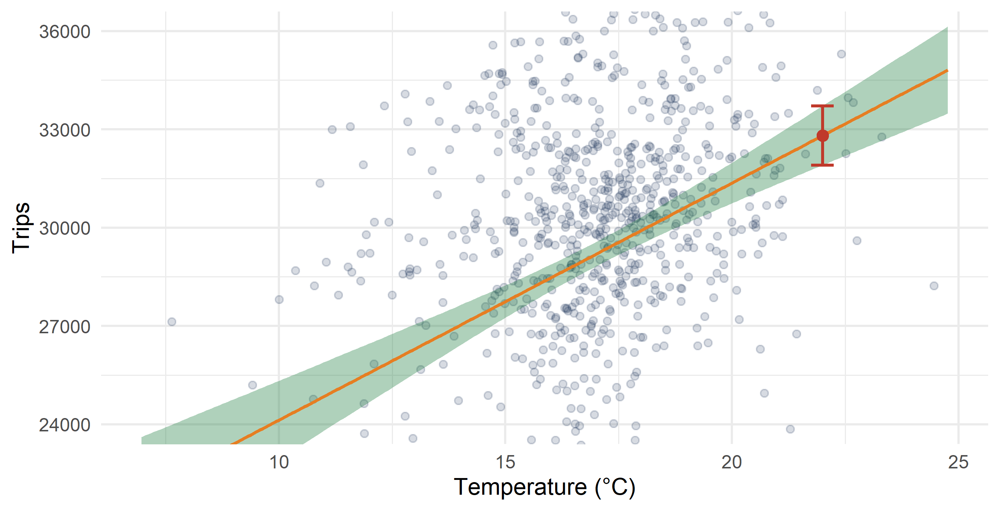
Where is the band narrowest? Why?
At \(\bar{x} = 17.0\) °C, where \((x_0 - \bar{x})^2 = 0\). Away from the centre, any error in the slope tilts the line further from the truth.
The forecast for next summer includes days at 30 °C. The hottest weekday in the data was 24.8 °C.
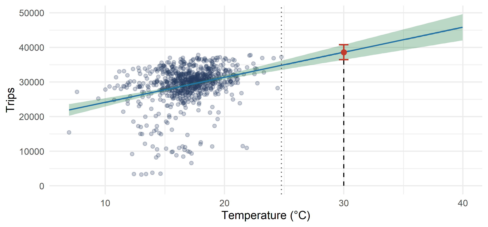
The 95% interval for the mean at 30 °C is 38,599 ± 2,165 trips — 2.4 times as wide as at 22 °C, and almost six times as wide as at 17 °C.
And that width only covers the uncertainty in the line. It assumes the line still holds at 30 °C, which no day in the data can confirm. Past the dotted line, the forecast is an extrapolation.
The average of many days is not tomorrow. One day carries its own error.
A drug company tests a treatment for hair loss:
\[\text{Hairs per cm}^2 = \hat{\beta}_0 + \hat{\beta}_1 \cdot \text{Dose in mg}\]
It has only tested doses between 1 and 25 mg and wants to go to 30 mg. It can ask two kinds of question.
Mean response. Give 30 mg to many, many people. What is their average hair count?
New response. Give 30 mg to one person. What will their hair count be?
For a new observation at \(x_0\), the error we make is \(y_0 - \hat{y}(x_0)\):
\[\text{Var}\left( y_0 - \hat{y}(x_0) \right) = \text{Var}\left( \hat{\beta}_0 + \hat{\beta}_1 x_0 \right) + \text{Var}(u_0) = \sigma^2 \left( \cssId{mt-pi1}{1} + \frac{1}{n} + \frac{(x_0 - \bar{x})^2}{S_{xx}} \right)\]
So, the New observation line on your formula sheet: \(y(x_0) \sim N\left( \beta_0 + \beta_1 x_0,\ \sigma^2 \left( 1 + \frac{1}{n} + \frac{(x_0 - \bar{x})^2}{S_{xx}} \right) \right)\)
And the interval:
\[PI_{y(x_0)} = \hat{\beta}_0 + \hat{\beta}_1 x_0 \pm t_{n-2,\,1-\alpha/2} \cdot \cssId{mt-sepi}{s \sqrt{1 + \frac{1}{n} + \frac{(x_0 - \bar{x})^2}{S_{xx}}}}\]
Tomorrow will be 22 °C. Build the 95% prediction interval for the number of trips tomorrow, for bikes$trips on bikes$temp (\(n = 781\)).
predict().The same as Exercise 11 with a 1 added inside the square root. For the check, predict(reg, new_data, interval = "prediction", level = 0.95).
reg <- lm(trips ~ temp, data = bikes)
n <- 781
x0 <- 22
b1 <- cov(bikes$temp, bikes$trips) / var(bikes$temp)
b0 <- mean(bikes$trips) - b1 * mean(bikes$temp)
yhat <- b0 + b1 * x0
s <- (anova(reg)[2, 2] / (n - 2))^0.5
xbar <- mean(bikes$temp)
Sxx <- (n - 1) * var(bikes$temp)
se_new <- s * (1 + 1 / n + (x0 - xbar)^2 / Sxx)^0.5
se_new
q <- qt(0.975, df = n - 2)
yhat - q * se_new
yhat + q * se_new
new_data <- data.frame(temp = 22)
predict(reg, new_data, interval = "prediction", level = 0.95)Compute both 95% intervals — for the mean and for one new day — at \(x_0 = 17\) °C (the centre of the data) and at \(x_0 = 22\) °C. Use predict().
new_data <- data.frame(temp = 17), then the two predict() calls. Width is upper minus lower. Repeat with 22.
reg <- lm(trips ~ temp, data = bikes)
new_17 <- data.frame(temp = 17)
predict(reg, new_17, interval = "confidence", level = 0.95)
predict(reg, new_17, interval = "prediction", level = 0.95)
new_22 <- data.frame(temp = 22)
predict(reg, new_22, interval = "confidence", level = 0.95)
predict(reg, new_22, interval = "prediction", level = 0.95)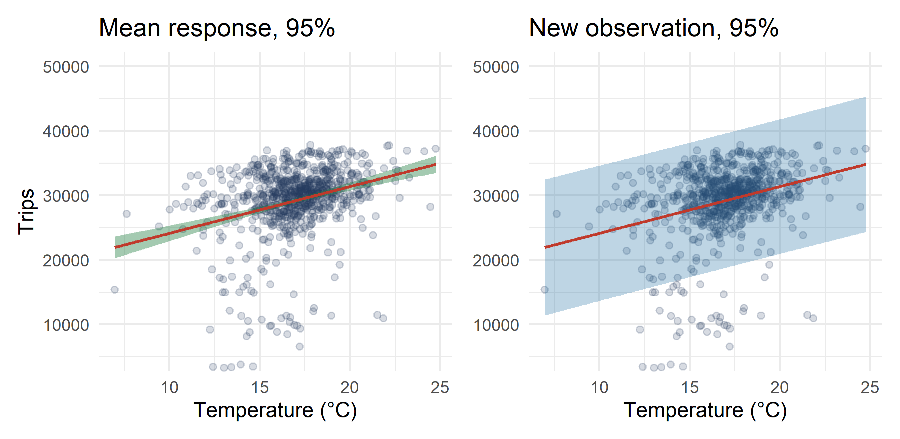
Midterm 2 questions on the fintech app data: 500 users, fintech$MonthlyVolume (thousands of pesos a month) on fintech$AccountAge (months on the platform).
Q10. State the hypotheses for testing whether AccountAge has any effect on MonthlyVolume. Show how the \(t\) statistic is calculated. At 5%, do you reject? Use both the \(t\) statistic and the p-value.
Q11. The product manager believes each extra month raises monthly volume by more than 1.5 thousand pesos. Test \(H_0: \beta_1 = 1.5\) against \(H_A: \beta_1 > 1.5\) at 5%.
Q12. An industry report claims each extra month adds exactly 2.5 thousand pesos. Test \(H_0: \beta_1 = 2.5\) against \(H_A: \beta_1 \neq 2.5\) at 5%, with \(t_{498,\,0.975} \approx 1.965\).
Build the slope and its standard error first, then one \(T\) per question. Only the null value in the numerator changes.
n <- 500
reg_fin <- lm(MonthlyVolume ~ AccountAge, data = fintech)
b1 <- cov(fintech$AccountAge, fintech$MonthlyVolume) / var(fintech$AccountAge)
se_b1 <- vcov(reg_fin)[2, 2]^0.5
b1
se_b1
T10 <- (b1 - 0) / se_b1
T10
2 * (1 - pt(T10, df = n - 2))
T11 <- (b1 - 1.5) / se_b1
T11
qt(0.95, df = n - 2)
1 - pt(T11, df = n - 2)
T12 <- (b1 - 2.5) / se_b1
T12
2 * pt(T12, df = n - 2)
summary(reg_fin)Q10. \(H_0: \beta_1 = 0\) against \(H_A: \beta_1 \neq 0\). \(T = 1.836 / 0.158 = 11.6\) (the exam printed the rounded 11.50). \(11.6 > 1.965\) and the p-value is below \(2 \times 10^{-16}\): reject. Account age predicts volume.
Q11. \(T = (1.836 - 1.5)/0.158 = 2.12 > 1.648\), p-value 0.017: reject. The data support the manager’s claim.
Q12. \(T = (1.836 - 2.5)/0.158 = -4.19\), and \(|-4.19| > 1.965\); p-value 0.00003: reject. The app’s users grow volume more slowly than the industry report says.
Q14. Write the formula for a 95% confidence interval for \(\beta_1\). Compute it using \(t_{498,\,0.975} \approx 1.965\). Does 2.5 (the industry benchmark from Q12) fall inside? Is that consistent with your test?
Q15. Build a 90% confidence interval for the intercept \(\beta_0\), using \(t_{498,\,0.95} \approx 1.648\). Interpret it.
The intercept is mean(y) - b1 * mean(x) and its standard error is vcov(reg_fin)[1, 1]^0.5.
n <- 500
reg_fin <- lm(MonthlyVolume ~ AccountAge, data = fintech)
b1 <- cov(fintech$AccountAge, fintech$MonthlyVolume) / var(fintech$AccountAge)
b0 <- mean(fintech$MonthlyVolume) - b1 * mean(fintech$AccountAge)
se_b1 <- vcov(reg_fin)[2, 2]^0.5
se_b0 <- vcov(reg_fin)[1, 1]^0.5
b1 - qt(0.975, df = n - 2) * se_b1
b1 + qt(0.975, df = n - 2) * se_b1
b0 - qt(0.95, df = n - 2) * se_b0
b0 + qt(0.95, df = n - 2) * se_b0Q14. \(\hat{\beta}_1 \pm t_{n-2,\,0.975} \cdot SE(\hat{\beta}_1) = 1.836 \pm 1.965 \times 0.158\): from 1.525 to 2.147. The value 2.5 is outside, which matches rejecting \(H_0: \beta_1 = 2.5\) against \(H_A: \beta_1 \neq 2.5\) in Q12.
Q15. \(399.61 \pm 1.648 \times 5.69\): from 390.2 to 409.0 thousand pesos. We are 90% confident that the average monthly volume of a brand-new user (0 months) is in that range.
Use \(n = 500\), \(\hat{\sigma} = 61.46\), \(\bar{x} = 31.464\), \(S_{xx} = 150{,}582.4\) and \(t_{498,\,0.975} \approx 1.965\).
Q16. Predict monthly volume for a user with 36 months on the platform. Why would a prediction at 120 months be unreliable?
Q17. Build the 95% confidence interval for the average volume of users with 36 months.
Q18. Build the 95% prediction interval for one specific user with 36 months. Why is it wider?
Q19. Your colleague says: “The prediction interval for a new observation is always wider than the confidence interval for the mean response.” You say: “The difference in width depends only on the sample size.” (a) Both correct. (b) Your colleague is correct, you are not. (c) You are correct, your colleague is not. (d) Neither is correct.
Read \(\hat{\beta}_0\) and \(\hat{\beta}_1\) off summary(), or compute them. For Q19, compute both widths at two different values of \(x_0\) and compare.
n <- 500
s <- 61.46
xbar <- 31.464
Sxx <- 150582.4
x0 <- 36
yhat <- 399.61 + 1.84 * x0
yhat
max(fintech$AccountAge)
se_mean <- s * (1 / n + (x0 - xbar)^2 / Sxx)^0.5
yhat - 1.965 * se_mean
yhat + 1.965 * se_mean
se_new <- s * (1 + 1 / n + (x0 - xbar)^2 / Sxx)^0.5
yhat - 1.965 * se_new
yhat + 1.965 * se_new
reg_fin <- lm(MonthlyVolume ~ AccountAge, data = fintech)
new_data <- data.frame(AccountAge = 36)
predict(reg_fin, new_data, interval = "confidence", level = 0.95)
predict(reg_fin, new_data, interval = "prediction", level = 0.95)Q16. \(399.61 + 1.84 \times 36 = 465.85\) thousand pesos (465.7 with unrounded coefficients). No user in the data has more than 60 months, so 120 months is an extrapolation: nothing tells us the line still holds there.
Q17. \(SE = 61.46\sqrt{1/500 + (36 - 31.464)^2/150{,}582.4} = 2.84\), so \(465.85 \pm 1.965 \times 2.84\): from 460.3 to 471.4.
Q18. \(SE = 61.46\sqrt{1 + 1/500 + (36 - 31.464)^2/150{,}582.4} = 61.53\), so \(465.85 \pm 1.965 \times 61.53\): from 345.0 to 586.7. It is wider because one user also carries their own error \(u_0\), with variance \(\sigma^2\); averaging over many users removes it.
Q19. (b). The extra 1 inside the square root makes the prediction interval always wider. But the gap depends on \(s\) and on \(x_0\), not only on \(n\).
One business question, answered with a number, a picture and one sentence.
The landlord again (rents$size in m², rents$rent in pesos a month, \(n = 150\)). Adding 10 m² costs 150,000 pesos.
The interval for \(10 \times \beta_1\) is 10 times the interval for \(\beta_1\). Payback is 150,000 divided by the monthly gain: the larger gain gives the shorter payback.
| Concept | Key formula or idea |
|---|---|
| Model | \(y_i = \beta_0 + \beta_1 x_i + u_i\) |
| OLS | Minimises \(SSE = \sum (y_i - \hat{y}_i)^2\) |
| Slope | \(\hat{\beta}_1 = \text{Cov}(x, y) / \text{Var}(x)\) |
| \(R^2\) | Share of the variation in \(y\) explained by \(x\) |
| Standard error | \(SE(\hat{\beta}_1) = s / \sqrt{S_{xx}}\), with \(s^2 = SSE/(n-2)\) |
| Test | \(T = (\hat{\beta}_1 - \beta_1^{0}) / SE(\hat{\beta}_1) \sim t_{n-2}\) |
| CI for \(\beta_1\) | \(\hat{\beta}_1 \pm t_{n-2,\,1-\alpha/2} \cdot SE(\hat{\beta}_1)\) |
| CI for the mean at \(x_0\) | \(\hat{y}(x_0) \pm t_{n-2,\,1-\alpha/2} \cdot s\sqrt{1/n + (x_0 - \bar{x})^2/S_{xx}}\) |
| PI for one new \(y\) at \(x_0\) | \(\hat{y}(x_0) \pm t_{n-2,\,1-\alpha/2} \cdot s\sqrt{1 + 1/n + (x_0 - \bar{x})^2/S_{xx}}\) |
vcov().qt() and the p-value with pt(); find the same numbers in summary().predict(), and say why one is wider.Next week: are the assumptions behind all of this true? Residual plots, non-constant variance, non-linearity and normality.
Problems from this week’s set. ← Back to the exam spotlight · ← Back to the summary
[P2 #4b]
Return to the cps regression of weekly earnings earnwk on education educ, estimated on employed workers only (cpsemployed, the subset where lfstatus == "Employed"). Provide a 95% confidence interval for the slope, and say in one sentence what it means for the return to a year of schooling.
cpsemployed <- cps[cps$lfstatus == "Employed", ]. The employed subset has 2,809 workers, so \(n - 2 = 2{,}807\).
\(\hat{\beta} \pm t_{2807,\,0.975} \times SE(\hat{\beta}) = 101.55 \pm 1.961 \times 5.575\): from 90.62 to 112.48.
We are 95% confident that each additional year of education is associated with between $90.62 and $112.48 more in weekly earnings.
[P2 #5b]
Three regressions from the Week 7 set (\(n = 930\)):
| iq on momiq | iq on dadiq | iq on avgiq | |
|---|---|---|---|
| \(\hat{\alpha}\) (se) | 69.585 (3.394) | 77.156 (3.426) | 56.487 (4.331) |
| \(\hat{\beta}\) (se) | 0.299 (0.034) | 0.231 (0.035) | 0.434 (0.044) |
| \(R^2\) | 0.0925 | 0.0522 | 0.1161 |
Each IQ variable has a sample mean close to 100 and a standard deviation close to 15.
momiq.iq on dadiq, test \(H_0: \beta = 0\) against \(H_A: \beta \neq 0\). Argue using the p-value.avgiq, predict their child’s IQ with a 99% prediction interval.For (c) you need \(s\). From the table: \(SST = (n-1) \times 15^2\) and \(SSE = (1 - R^2) \times SST\), so \(s^2 = SSE / (n-2)\). Take \(S_{xx} = (n - 1) \times 15^2\) too.
n <- 930
# (a)
0.299 - qt(0.975, df = n - 2) * 0.034
0.299 + qt(0.975, df = n - 2) * 0.034
# (b)
t_stat <- 0.231 / 0.035
t_stat
2 * (1 - pt(t_stat, df = n - 2))
# (c)
x0 <- (130 + 85) / 2
yhat <- 56.487 + 0.434 * x0
yhat
SST <- (n - 1) * 15^2
SSE <- (1 - 0.1161) * SST
s <- (SSE / (n - 2))^0.5
s
Sxx <- (n - 1) * 15^2
se_new <- s * (1 + 1 / n + (x0 - 100)^2 / Sxx)^0.5
yhat - qt(0.995, df = n - 2) * se_new
yhat + qt(0.995, df = n - 2) * se_new\(0.299 \pm 1.9625 \times 0.034\): from 0.232 to 0.366.
\(T = 0.231/0.035 = 6.60\). With 928 degrees of freedom the p-value is about \(6.9 \times 10^{-11}\), far below any usual level: reject \(H_0\). The father’s IQ is a significant predictor of the child’s IQ.
\(avgiq = (130 + 85)/2 = 107.5\), so \(\hat{y} = 56.487 + 0.434 \times 107.5 = 103.14\). \(s \approx 14.11\), and the 99% prediction interval is \(103.14 \pm 2.581 \times 14.12\): from about 66.7 to 139.6. It is very wide: parental IQ leaves most of the variation in a child’s IQ unexplained.
[P2 #8]
Is I or II higher, or are they equal? Explain. For a regression line, the uncertainty in the slope estimate \(\hat{\beta}_1\) is higher when:
\[SE(\hat{\beta}_1) = \frac{s}{\sqrt{\sum (x_i - \bar{x})^2}}\]
so the standard error of the slope grows with it: ten times the scatter gives ten times the standard error.
When points sit tightly around the line, only a narrow range of slopes fits them. When they are spread out, many different slopes fit about equally well.
[P2 #15]
Regression of annual murders per million on the percentage living in poverty, in 20 metropolitan areas:
| Estimate | Std. Error | t value | Pr(>|t|) | |
|---|---|---|---|---|
| Intercept | −29.901 | 7.789 | −3.839 | 0.001 |
| poverty% | 2.559 | 0.390 | 6.562 | 0.000 |
\(s = 5.512\), \(R^2 = 70.52\%\), \(R^2_{adj} = 68.89\%\).
The correlation has the sign of the slope and size \(\sqrt{R^2}\): 0.7052^0.5. The critical value is qt(0.975, df = n - 2).
\(\widehat{\text{murders}} = -29.901 + 2.559 \times \text{poverty\%}\).
At 0% poverty the predicted murder rate is −29.9 per million. That is not meaningful: murder rates cannot be negative, and no area has 0% poverty.
Each extra percentage point of poverty goes with 2.559 more murders per million.
Poverty explains about 70.5% of the variation in murder rates across these areas.
\(r = +\sqrt{0.7052} = 0.840\), positive because the slope is positive.
\(H_0: \beta = 0\) against \(H_A: \beta \neq 0\).
\(T = 6.562\) and \(p < 0.001\): reject \(H_0\) at any usual level. Poverty is a significant predictor of murder rate.
\(2.559 \pm 2.1009 \times 0.390\): from 1.740 to 3.378. We are 95% confident that each extra point of poverty goes with between 1.74 and 3.38 more murders per million.
Yes. The interval does not contain 0, and the two-sided test at 5% rejects \(\beta = 0\). This always holds: a 95% interval that excludes a value means a two-sided test at 5% rejects that value.
[P2 #16]
Regression of heart weight (g) on body weight (kg) for 144 domestic cats:
| Estimate | Std. Error | t value | Pr(>|t|) | |
|---|---|---|---|---|
| Intercept | −0.357 | 0.692 | −0.515 | 0.607 |
| body wt | 4.034 | 0.250 | 16.119 | 0.000 |
\(s = 1.452\), \(R^2 = 64.66\%\), \(R^2_{adj} = 64.41\%\).
0.6466^0.5, with the sign of the slope.
\(\widehat{\text{heart wt}} = -0.357 + 4.034 \times \text{body wt}\).
The predicted heart weight of a 0 kg cat is −0.357 g. Not meaningful — no cat weighs 0 kg — and the intercept is not significant (\(p = 0.607\)).
Each extra kilogram of body weight goes with 4.034 g more heart weight.
Body weight explains about 64.7% of the variation in heart weight.
\(r = +\sqrt{0.6466} = 0.804\).
[P2 #17]
Weight (kg) on height (cm) for 507 physically active individuals:
| Estimate | Std. Error | t value | Pr(>|t|) | |
|---|---|---|---|---|
| Intercept | −105.0113 | 7.5394 | −13.93 | 0.0000 |
| height | 1.0176 | 0.0440 | 23.13 | 0.0000 |
“An increase is associated with an increase” is one-directional. The one-sided p-value for a positive \(T\) is 1 - pt(t_stat, df = n - 2).
Positive and moderately strong: taller people tend to weigh more.
\(\widehat{\text{weight}} = -105.01 + 1.018 \times \text{height}\). Each extra cm goes with about 1.02 kg more. The intercept is the predicted weight at 0 cm — far outside the data, no meaning.
\(H_0: \beta = 0\) against \(H_A: \beta > 0\). \(T = 23.13\), and the one-sided p-value is essentially 0. Reject \(H_0\): very strong evidence that taller people weigh more.
\(R^2 = 0.72^2 = 0.518\). Height explains about 51.8% of the variation in weight; the rest comes from body composition, diet, exercise and other factors.
[P2 #18]
Sixteen student volunteers at Ohio State University drank a randomly assigned number of cans of beer. Thirty minutes later their blood alcohol content (BAC) was measured.
| Estimate | Std. Error | t value | Pr(>|t|) | |
|---|---|---|---|---|
| Intercept | −0.0127 | 0.0126 | −1.00 | 0.3320 |
| beers | 0.0180 | 0.0024 | 7.48 | 0.0000 |
Two-sided p-value for a positive \(T\): 2 * (1 - pt(t_stat, df = n - 2)).
Strong, positive and linear: more beers, higher BAC.
\(\widehat{BAC} = -0.0127 + 0.0180 \times \text{beers}\). Each extra beer goes with 0.018 more BAC. The intercept, BAC at 0 beers, is slightly negative, which has no practical meaning, and it is not significant (\(p = 0.332\)).
\(T = 7.48\) with 14 degrees of freedom; the p-value is about 0.000003. Reject \(H_0\): the number of beers is a highly significant predictor of BAC.
\(R^2 = 0.89^2 = 0.792\): beers explain about 79.2% of the variation in BAC.
Probably weaker. Self-reported drinks are counted with error; drink sizes, food, body weight and metabolism vary across bar customers; and bar customers may drink differently from student volunteers. The randomized experiment removes this noise.
[P2 #19]
Heights of 170 married couples in Britain. Wife’s height on husband’s height (inches):
| Estimate | Std. Error | t value | Pr(>|t|) | |
|---|---|---|---|---|
| Intercept | 43.5755 | 4.6842 | 9.30 | 0.0000 |
| husband height | 0.2863 | 0.0686 | 4.17 | 0.0000 |
“Taller men marry taller women” is one-directional: 1 - pt(t_stat, df = n - 2).
\(H_0: \beta = 0\) against \(H_A: \beta > 0\). \(T = 4.17\), one-sided p-value 0.00002: reject. Strong evidence that taller men marry taller women.
\(\widehat{\text{wife}} = 43.58 + 0.2863 \times \text{husband}\).
Each extra inch of the husband goes with 0.29 inches more for the wife: significant but modest. The intercept, a husband 0 inches tall, has no meaning.
\(r = +\sqrt{0.09} = 0.30\).
\(43.58 + 0.2863 \times 69 = 63.33\) inches. Use it with care: \(R^2 = 0.09\), so the prediction interval for one wife is very wide.
No. 79 inches (6’7’’) is very likely outside the range of the data, so this would be an extrapolation; the line may not hold there.
[P2 #21]
Twenty-five low birth-weight babies at a Harvard teaching hospital. Head circumference (cm) on gestational age (weeks):
\[\widehat{\text{head circumference}} = 3.91 + 0.78 \times \text{gestational age}\]
qt(0.975, df = 23) is the critical value; 2 * (1 - pt(t_stat, df = 23)) the p-value.
\(3.91 + 0.78 \times 28 = 25.75\) cm.
\(T = 0.78/0.35 = 2.229\). The critical value is \(t_{23,\,0.975} = 2.069\), and \(2.229 > 2.069\): reject \(H_0\). The p-value is 0.036. Moderately strong evidence: each extra week goes with 0.78 cm more head circumference.
[P2 #22]
houseprices: one-family home sales in Ames, Iowa, 2006–2010. Outcome houseprices$saleprice (dollars); explanatory variable houseprices$grlivarea (above-ground living area, square feet).
lm and store it in hp_results. Report the equation.predict() for the 95% confidence interval for the mean sale price of houses with 2,000 square feet. Interpret it.saleprice against grlivarea, and the fitted values. Does a linear model seem adequate?new_data <- data.frame(grlivarea = 2000). For (g), plot(x, y) and then plot(x, fitted(hp_results)).
n <- 973
hp_results <- lm(saleprice ~ grlivarea, data = houseprices)
summary(hp_results)
b_ga <- 109.57
se_ga <- vcov(hp_results)[2, 2]^0.5
b_ga - qt(0.975, df = n - 2) * se_ga
b_ga + qt(0.975, df = n - 2) * se_ga
new_data <- data.frame(grlivarea = 2000)
predict(hp_results, new_data, interval = "confidence", level = 0.95)
predict(hp_results, new_data, interval = "prediction", level = 0.95)
plot(houseprices$grlivarea, houseprices$saleprice)
plot(houseprices$grlivarea, fitted(hp_results))\(\widehat{\text{saleprice}} = 13{,}838 + 109.57 \times \text{grlivarea}\).
Each extra square foot goes with about $109.57 more in expected sale price. Positive, as expected: larger houses sell for more.
\(109.57 \pm 1.962 \times 2.80\): from 104.08 to 115.06. Zero is far outside: significant evidence of an association.
From $229,113 to $236,841. We are 95% confident that the average price of all 2,000 sq ft houses is in this range.
From $145,103 to $320,851. We are 95% confident that one particular 2,000 sq ft house sells in this range.
The CI is about $7,700 wide, the PI about $175,700. The CI only covers uncertainty about where the line is. The PI adds the scatter of one house around the line, \(s \approx \$44{,}735\): \(SE_{\text{pred}}^2 = SE_{\text{mean}}^2 + s^2\), and \(s^2\) dominates.
The line captures the trend, but some very expensive houses sit far above it, and the spread of prices grows with living area — a sign of non-constant variance (W09).
[P2 #23]
births: singleton births in December 2021, mothers aged 25–35 (\(n = 50{,}249\)). Outcome births$bweight, birthweight in grams.
bweight on smoke (1 if the mother smoked during pregnancy). Store it in birth_results.bweight on the mother’s age age. Test \(H_0: \beta_{\text{age}} = 0\) against \(H_A: \beta_{\text{age}} \neq 0\) at 5%. Do older mothers (within 25–35) have heavier or lighter babies?Left-tail p-value: pt(t_stat, df = n - 2). Two-sided with a negative \(T\): 2 * pt(t_stat, df = n - 2). 99% critical value: qt(0.995, df = n - 2).
n <- 50249
birth_results <- lm(bweight ~ smoke, data = births)
summary(birth_results)
b_sm <- -210.30
se_sm <- vcov(birth_results)[2, 2]^0.5
t_stat <- b_sm / se_sm
t_stat
pt(t_stat, df = n - 2)
2 * pt(t_stat, df = n - 2)
b_sm - qt(0.995, df = n - 2) * se_sm
b_sm + qt(0.995, df = n - 2) * se_sm
birth_age <- lm(bweight ~ age, data = births)
summary(birth_age)Babies of non-smoking mothers weigh 3,259 g on average. Babies of mothers who smoked weigh 210 g less on average: the slope is the difference in group means.
\(T = -11.83\). The one-sided p-value is about \(10^{-32}\): reject \(H_0\). Overwhelming evidence that smoking reduces birthweight.
The two-sided p-value is exactly twice the one-sided one. The one-sided test puts the whole 5% in the tail where the effect is expected, so a smaller effect in that direction is enough to reject. Both reject here.
\(-210.30 \pm 2.576 \times 17.77\): from −256.1 to −164.5. Zero is outside, consistent with rejecting at 1%.
The slope is −2.15 g per year of age, with p-value 0.007: reject \(H_0\) at 5%. Older mothers have slightly lighter babies, but the effect is small and \(R^2\) is very low.
[#12 · core]
h is a sample of 200 ENIGH households with positive income, already drawn for you (the sheet’s set.seed(11) draw). h$food_spending and h$monthly_income are in pesos a month. Fit m <- lm(food_spending ~ monthly_income, data = h).
Build the standard error with vcov(m)[2, 2]^0.5 before you look at summary(m). nd <- data.frame(monthly_income = 20000) for the predictions.
m <- lm(food_spending ~ monthly_income, data = h)
b1 <- cov(h$monthly_income, h$food_spending) / var(h$monthly_income)
se_b1 <- vcov(m)[2, 2]^0.5
b1
se_b1
b1 / se_b1
b1 - 1.972 * se_b1
b1 + 1.972 * se_b1
summary(m)
nd <- data.frame(monthly_income = 20000)
predict(m, nd, interval = "confidence", level = 0.95)
predict(m, nd, interval = "prediction", level = 0.95)Slope 0.08322, SE 0.01315, \(t = 6.328\) (\(R^2 = 0.168\), \(s = 2{,}386\)).
\(H_0: \beta = 0\) against \(H_A: \beta \neq 0\). \(6.328 > 1.972\) (p-value \(1.6 \times 10^{-9}\)): reject. Income predicts food spending.
From 0.0573 to 0.1092. Each extra peso of income goes with between 5.7 and 10.9 centavos more spent on food.
\(\hat{y} = 2{,}268.92 + 0.08322 \times 20{,}000 = 3{,}933.34\) pesos. 95% CI for the mean: from 3,576.07 to 4,290.61.
From −785.57 to 8,652.25. It carries two sources of uncertainty: where the line is (the only one in the CI) plus the scatter of single households around it, \(\sigma^2\). Single households vary enormously; the average of many is far more predictable.
The model is fine for the average and poor for the individual. A straight line with symmetric normal errors, fitted to a positive and right-skewed outcome, produces impossible values at the edges of the interval.
[#13 · core]
wage1 holds 526 US workers: wage1$wage is the hourly wage in dollars, wage1$lwage its log, and wage1$educ years of education.
lm(wage ~ educ, data = wage1) and report the intercept, slope, standard error and \(R^2\).lm(lwage ~ educ, data = wage1). Report the slope and interpret it as a percentage return per year of schooling.The confidence interval answers (d): a value inside a 95% interval survives a two-sided test at 5%.
Intercept −0.9049, slope 0.5414, SE 0.05325, \(R^2 = 0.1648\) (\(t = 10.17\)).
Each extra year of schooling goes with about 54 cents more per hour.
The intercept is the predicted wage at 0 years of education. Almost nobody in the sample has 0 years, so this point is outside the data and the line is extrapolated there. It positions the line; it is not a prediction to use.
From 0.4368 to 0.6460. 0.50 is inside, so we cannot reject \(H_0: \beta = 0.5\) at 5%: a return of exactly 50 cents is consistent with the data.
Slope 0.08274: each extra year of schooling goes with about 8.3% higher wages (exactly \(e^{0.08274} - 1 = 8.6\%\)).
Education explains about 17% of the variation in wages. The slope is a reliable statement about averages over many people; it is a poor predictor of what one student will earn.
[#14 · stretch]
ws is a sample of 300 ENOE workers from 2022 with income between 0 and 100,000 pesos a month, already drawn for you (the sheet’s set.seed(5) draw). ws$Income is monthly income in pesos and ws$Hours_worked_lw hours worked last week.
lm(Income ~ Hours_worked_lw, data = ws). Report the slope, its standard error, its \(t\) statistic and the p-value for \(H_0: \beta = 0\) against \(H_A: \beta \neq 0\).The same chain as always: slope, vcov() standard error, \(T\), pt(), qt(). Then summary() for \(R^2\).
n <- 300
mh <- lm(Income ~ Hours_worked_lw, data = ws)
b_h <- cov(ws$Hours_worked_lw, ws$Income) / var(ws$Hours_worked_lw)
se_h <- vcov(mh)[2, 2]^0.5
t_stat <- b_h / se_h
b_h
se_h
t_stat
2 * (1 - pt(t_stat, df = n - 2))
b_h - qt(0.975, df = n - 2) * se_h
b_h + qt(0.975, df = n - 2) * se_h
summary(mh)Slope 65.91, SE 17.82, \(t = 3.699\), p-value 0.00026.
One extra hour a week predicts about 66 pesos more a month.
From 30.84 to 100.97 pesos per weekly hour: wide, but well above zero.
\(R^2 = 0.044\): hours explain under 5% of the variation in income. Precisely estimated means the average relationship is pinned down well enough to rule out zero — that is what the small p-value says. Predictive means knowing \(x\) tells you a lot about one person’s \(y\) — that is what \(R^2\) says, and here it does not.
Occupation (or education, or experience). Higher-paying occupations tend to record fewer hours than the lowest-paid informal work, so leaving occupation out likely biases the hours slope downward.
The algebra behind the results in the main flow.
Last week: rescale \(x\) to \(z = ax + c\) and the slope becomes \(\hat{\beta}_1 / a\).
A classic version: a house-price regression is estimated on lot area in square feet, and you want to use it in a country that uses square metres. How do \(\hat{\beta}_1\) and \(SE(\hat{\beta}_1)\) change?
The same question for your client: her investors are in Texas and think in Fahrenheit, \(F = 1.8\,C + 32\).
Make bikes$temp_f, the temperature in Fahrenheit: \(1.8 \times\) bikes$temp \(+ 32\).
trips on temp_f and get the slope and its standard error from vcov().Here \(a = 1.8\), so the slope is divided by 1.8. The standard error is measured in the same units as the slope. The slope itself: cov(bikes$temp_f, bikes$trips) / var(bikes$temp_f).
bikes$temp_f <- 1.8 * bikes$temp + 32
reg_f <- lm(trips ~ temp_f, data = bikes)
b1_f <- cov(bikes$temp_f, bikes$trips) / var(bikes$temp_f)
b1_f
se_f <- vcov(reg_f)[2, 2]^0.5
se_f
b1_f / se_f
reg <- lm(trips ~ temp, data = bikes)
b1 <- cov(bikes$temp, bikes$trips) / var(bikes$temp)
b1 / vcov(reg)[2, 2]^0.5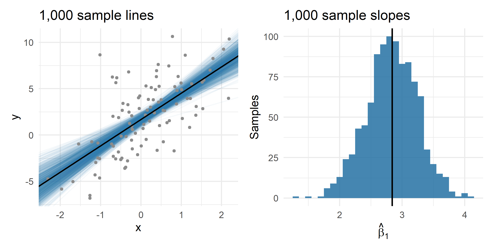
The 1,000 slopes average 2.83, against a population slope of 2.84. Their standard deviation is 0.41: a typical sample slope misses by about that much.
Last week you told your Ecobici client:
A one-degree warmer day brings about 724 more trips.
She is about to order new bikes against that number. Her finance director asks two questions:
Both are questions about uncertainty. Answering them is this week.
bikes — the same 781 weekdays in Mexico City, 2017–2019.
| Column | What it is |
|---|---|
trips |
Ecobici trips that day |
temp |
average temperature, °C |
pm25 |
fine-particle pollution, µg/m³ |
friday |
1 if Friday, 0 otherwise |
year |
2017, 2018 or 2019 |
Each year has about 260 weekdays. Each year is a sample of its own.
Fit the regression of bikes$trips on bikes$temp three times: once with only the 2017 days, once with 2018, once with 2019.
bikes[bikes$year == 2017, ] keeps only the 2017 rows. Pass it as the data argument: lm(trips ~ temp, data = bikes[bikes$year == 2017, ]).
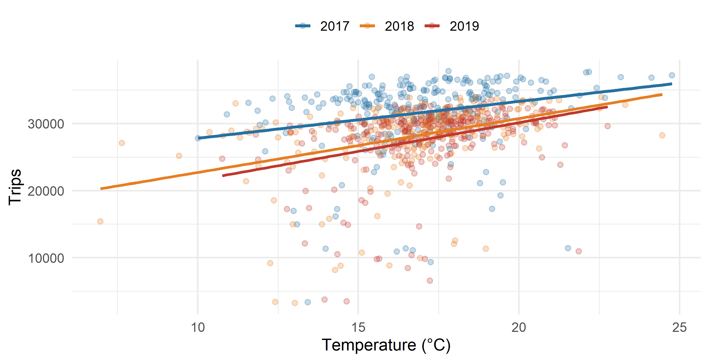
Treat the \(x_i\) as fixed. Then \(\text{Var}(y_i) = \text{Var}(\beta_0 + \beta_1 x_i + u_i) = \text{Var}(u_i) = \sigma^2\), and
\[\begin{aligned} \text{Var}(\hat{\beta}_1) &= \text{Var}\left( \frac{\sum (x_i - \bar{x})(y_i - \bar{y})}{\sum (x_i - \bar{x})^2} \right) = \text{Var}\left( \sum_i \frac{(x_i - \bar{x})\, y_i}{S_{xx}} \right) \\ &= \sum_i \left( \frac{x_i - \bar{x}}{S_{xx}} \right)^2 \text{Var}(y_i) = \frac{\sigma^2}{S_{xx}} \end{aligned}\]
The third step uses \(\text{Cov}(u_i, u_j) = 0\): the variance of a sum of uncorrelated terms is the sum of their variances.
For the intercept:
\[\begin{aligned} \text{Var}(\hat{\beta}_0) &= \text{Var}(\bar{y} - \hat{\beta}_1 \bar{x}) = \text{Var}(\bar{y}) + \bar{x}^2\, \text{Var}(\hat{\beta}_1) - 2 \bar{x}\, \underbrace{\text{Cov}(\bar{y}, \hat{\beta}_1)}_{0} \\ &= \frac{\sigma^2}{n} + \bar{x}^2 \frac{\sigma^2}{S_{xx}} = \sigma^2 \left( \frac{1}{n} + \frac{\bar{x}^2}{S_{xx}} \right) \end{aligned}\]
The OLS slope is a linear combination of the errors:
\[\hat{\beta}_1 = \beta_1 + \sum_i \underbrace{\frac{x_i - \bar{x}}{S_{xx}}}_{\text{weight}} u_i\]
Call each weighted error \(Z_i = \frac{x_i - \bar{x}}{S_{xx}} u_i\), so that \(\hat{\beta}_1 - \beta_1 = \sum_i Z_i\).
By the Central Limit Theorem, a sum of many independent, mean-zero terms is approximately normal:
\[\sum_i Z_i \;\overset{d}{\longrightarrow}\; N\left( 0,\ \text{Var}\left( \sum_i Z_i \right) \right)\]
And
\[\text{Var}\left( \sum_i Z_i \right) = \sum_i \text{Var}(Z_i) = \frac{\sum_i (x_i - \bar{x})^2}{S_{xx}^2}\, \sigma^2 = \frac{S_{xx}}{S_{xx}^2}\, \sigma^2 = \frac{\sigma^2}{S_{xx}}\]
so
\[\hat{\beta}_1 - \beta_1 \;\overset{d}{\longrightarrow}\; N\left( 0,\ \frac{\sigma^2}{S_{xx}} \right)\]
← Back to Big samples: the CLT